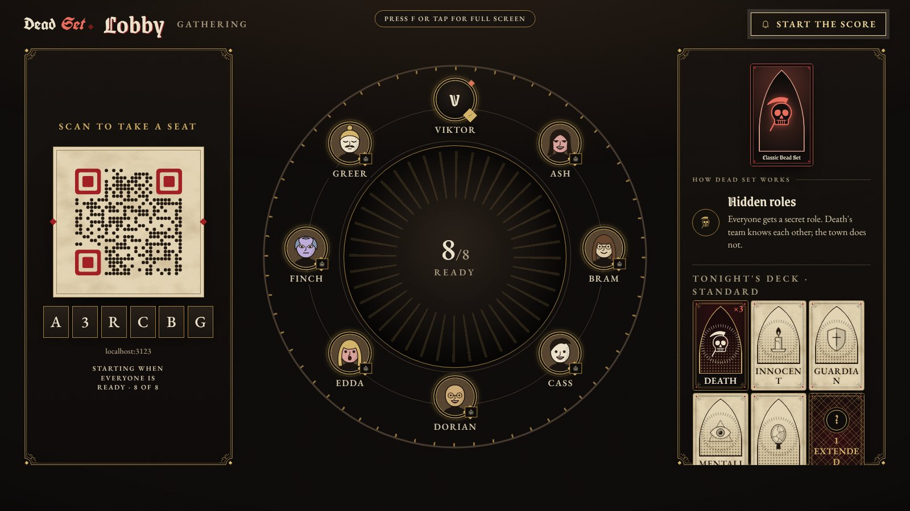
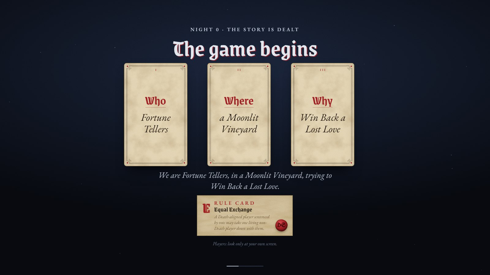
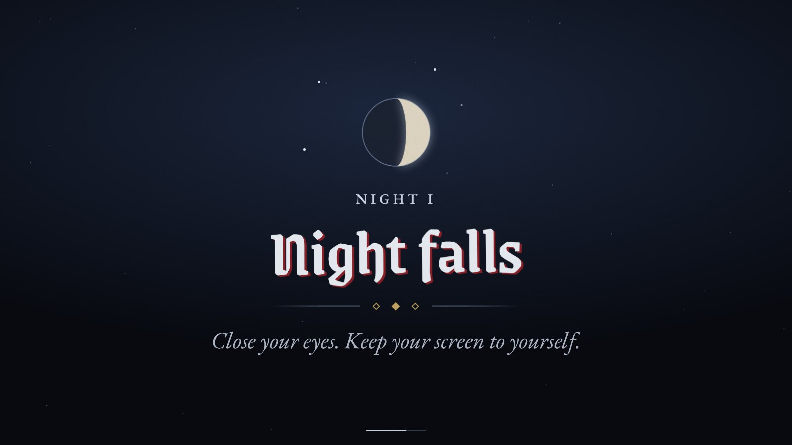
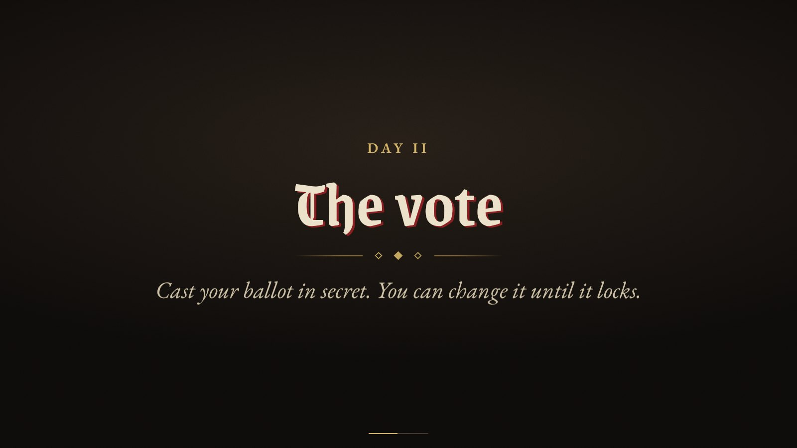
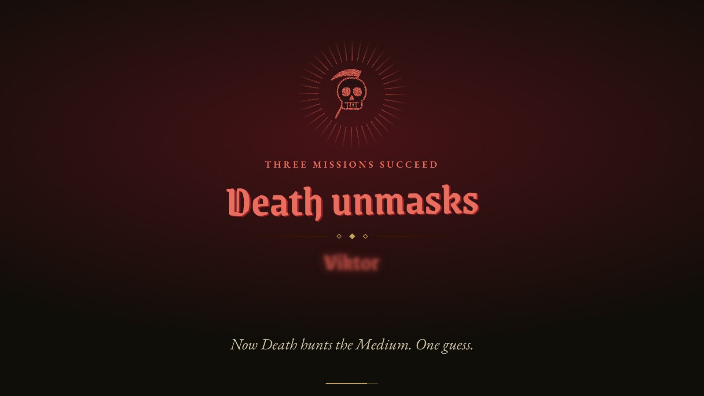
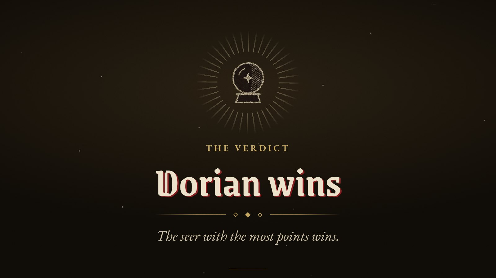
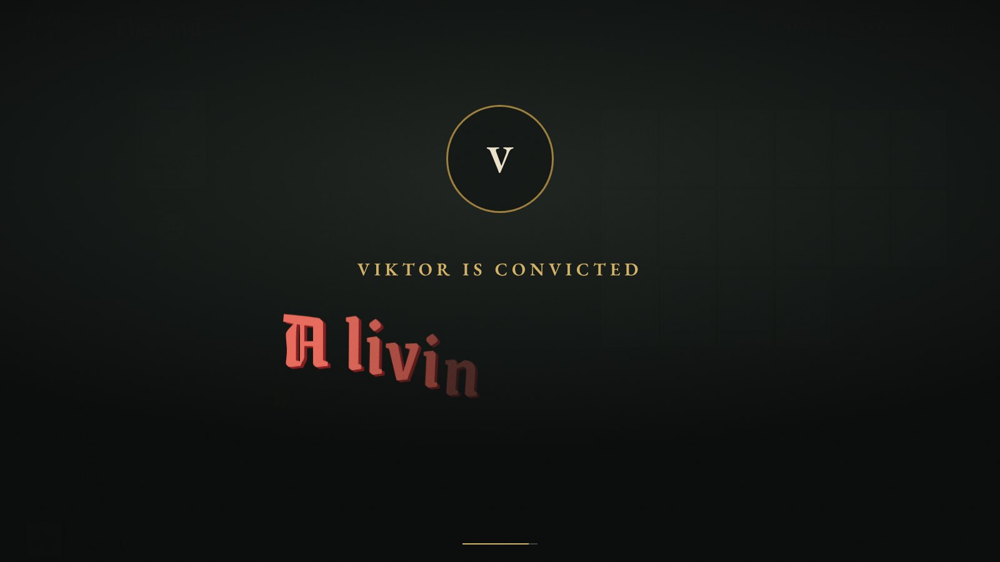
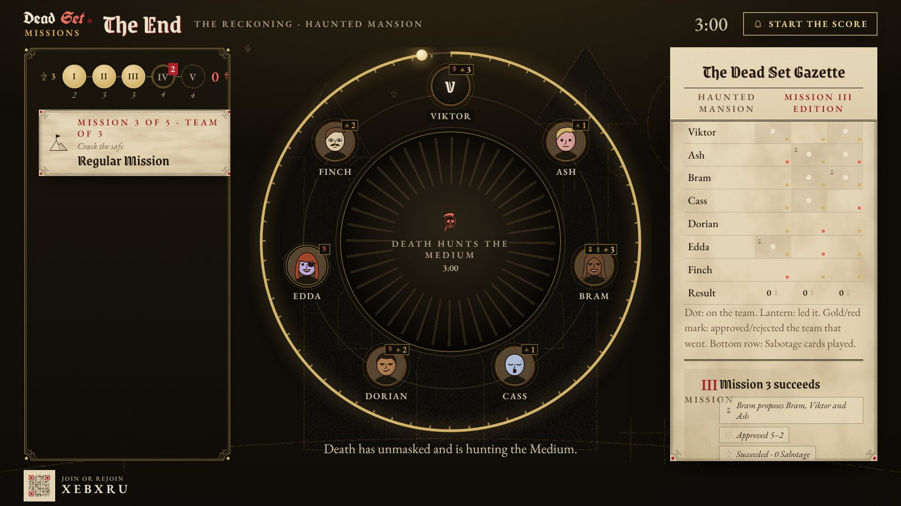

Captured from the latest branch. What works, what breaks, and what each of the four needs to do.
Audit
123456789
Three story cards in a column and a rule card: good bones, but small (story cards 150 px) and nothing is dealt to the seats.

Elegant and calm, but the same emblem + title + line as every interlude; no table, no faces, header and band gone.

A title in a void for 2.6 s. The room already knows; this could be the arch passing over the table instead.

The name is 22 px, red-on-red and blurred mid-animation; the moment the room has waited for is the smallest thing on screen.

“Dorian wins” and one line. No podium, no scores, no table truth; it stays like this until the host moves on.

The verdict line is clipped (“A livin…”) and runs off the frame while the convicted medallion floats alone.

The game board returns with a “The End” header: 13 px Gazette, the rail and the ring unchanged. No honours on the TV.
A blank red frame for ~3 s between the vote and the verdict (TV-R3).